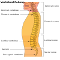

lordosis

Definition: Lordosis is historically defined as an abnormal inward curvature of the lumbar spine. However, the terms lordosis and lordotic are also used to refer to the normal inward curvature of the lumbar and cervical regions of the human spine. Similarly, kyphosis historically refers to abnormal convex curvature of the spine. The normal outward (convex) curvature in the thoracic and sacral regions is also termed kyphosis or kyphotic. The term comes from the Greek lordōsis, from lordos ("bent backward").Lordosis in the human spine makes it easier for humans to bring the bulk of their mass over the pelvis. This allows for a much more efficient walking gait than that of other primates, whose inflexible spines cause them to resort to an inefficient forward-leaning "bent-knee, bent-waist" gait. As such, lordosis in the human spine is considered one of the primary physiological adaptations of the human skeleton that allows for human gait to be as energetically efficient as it is.Lumbar hyperlordosis is excessive extension of the lumbar region, and is commonly called hollow back, sway back, or saddle back (after a similar condition that affects some horses). Lumbar kyphosis is an abnormally straight (or in severe cases flexed) lumbar region.
Source: Wikipedia
Wikipedia Page
Wikidata Page